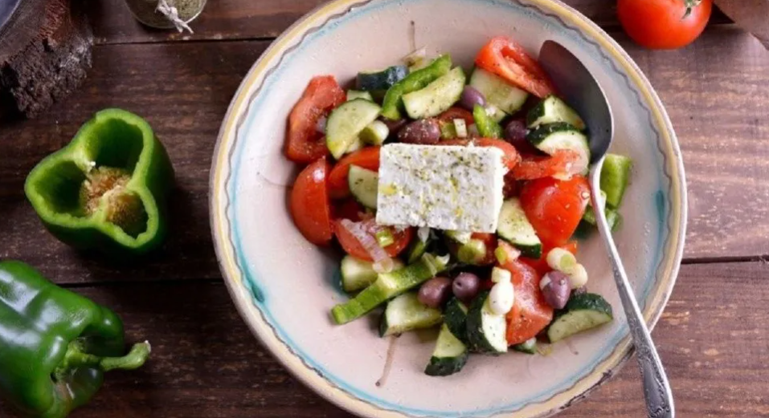
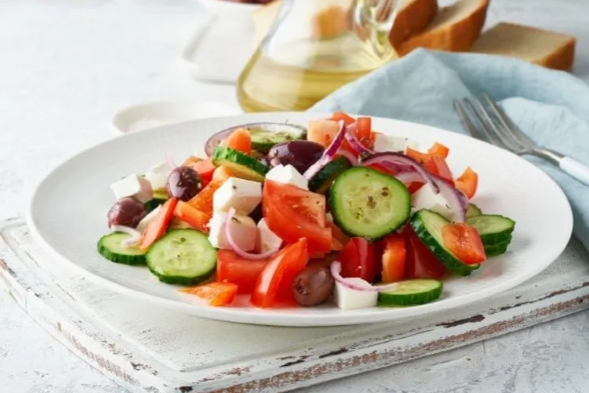

Receta de Horiatiki, la tentadora y tradicional ensalada griega
Los orígenes e ingredientes de este exquisito plato de la cocina mediterránea, ideal para innovar en tu recetario de ensaladas frescas. Además de ser súper fácil y nutritiva, satisface mucho el apetito.
Así se cocina la ensalada más popular de Grecia.
Reporter
September 16, 2021 12:20 pm
Horiatiki es el nombre con el que se conoce a la típica ensalada griega, que a diferencia de otras preparaciones similares más comunes, no lleva hojas de lechuga o parecidas. Se trata de un plato llenador, atractivo por su variedad de colores, con ingredientes frescos y deliciosos al combinarlos, y se corona con un aderezo especial. Sin lugar a dudas, después de probar esta ensalada, te aseguramos que entrará en el podio de tus platos veraniegos preferidos.
La ensalada Horatiki es una de las más populares de Grecia.
La Horiatiki Salata, esta exquisitez que se prepara con frecuencia en la gastronomía mediterránea, forma parte del amplio repertorio de platos representativos de la cocina Griega. El queso feta, el aceite de oliva, y las aceitunas son algunos de los ingredientes que hacen un buen ejemplo de lo que es la dieta de ese país.
En esta oportunidad, te compartimos la receta de esta fabulosa ensalada griega para que sientas una fiesta de sabores en tu paladar y te transportes a otra región del mundo sin salir de tu cocina.
Ingredientes:
Para la vinagreta especial de la Horiatiki:
- 8 cucharadas de aceite de oliva extra virgen
- 2 cucharadas de vinagre
- 2 cucharaditas de orégano
- 1 diente de ajo
- Sal y pimienta
Para la ensalada:
- 1 pepino
- 2 tomates maduros
- 1 pimiento verde
- 1/. cebolla morada
- 125 gr de queso feta
- Un puñado de aceitunas Kalamata o aceitunas negras en su defecto
- Un chorrito de vinagre de vino
- Un chorrito de aceite de oliva virgen extra
- Una pizca de orégano
- Sal y pimienta
No te olvides de añadir la clásica vinagreta que acompaña a esta ensalada griega.
Procedimiento:
Para el aderezo:
- Pelá el ajo y machacalo con un poco de sal, ayudándote de un mortero o similar.
- Incorpóralo a un frasco o tupper con tapa y añadí el aceite, el vinagre y el orégano. Cerra el frasco y agitalo durante unos segundos. Reserva en la heladera.
Para la ensalada:
- Cortá los tomates en gajos no muy grandes
- Pelá el pepino y córtalo en rodajas finas
- Lavá bien el pimiento y córtalo también en rodajas finas
- Deshechá las primeras capas de la cebolla morada y cortá la mitad en rodajas muy finas, casi transparentes. Ahora cortá el queso feta en cubos del mismo tamaño.
- Mezclá bien todos los ingredientes en una ensaladera. Añadí las aceitunas enteras o cortadas en rodajitas.
- Mezclá bien todo y reserva en frío hasta servir.
- ¡A disfrutarla!